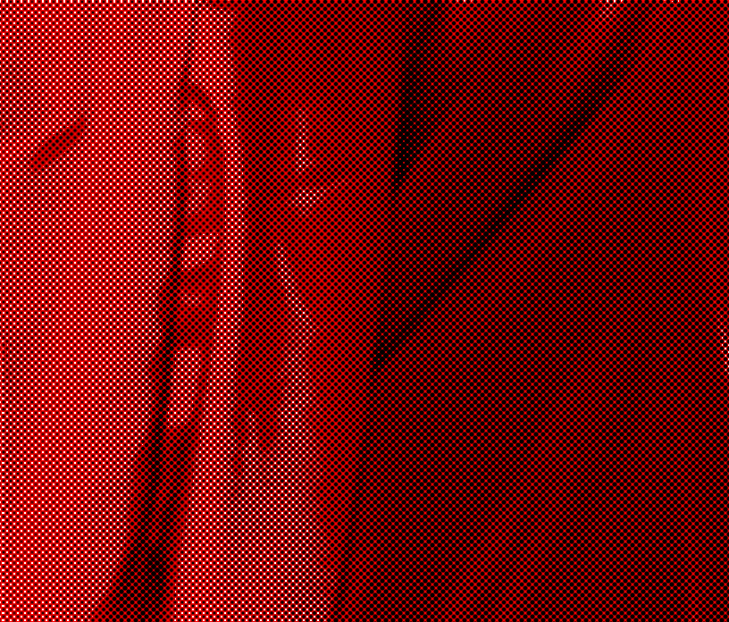

MIRT
performance duo Nekerina, composé de Manèkè et Marina Smorodinova, 30 minutes, 2026
Le myrte est une plante qui, dans la Grèce antique, était consacrée à Aphrodite : l’amour, le désir, le mariage, la fertilité. Mais il est aussi présent dans les rites funéraires méditerranéens et sur certaines tombes. Son feuillage persistant en fait un symbole de ce qui demeure après la disparition. En russe, cette même plante s’appelle мирт, que nous écrirons phonétiquement « mirt » en français. Durant cette performance, Maneke et Marina Smorodinova rencontrent leurs fantômes : ceux des personnes disparues ou simplement absentes de leur vie, mais aussi ceux des cultures, des langues et des histoires dont elles portent les traces. Des héritages multiples et métissés qui continuent de vivre en elles.
___
Journal du bord :
Les étapes de création ont été presentés :
mai 2026 - 1km dance CND Pantin
oct 2026 - Le Générateur, Gentilly


